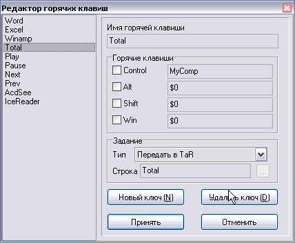

Плагин управления горячими клавишами
Версия: 1.0 final
Автор: Python <smisoft@rambler.ru> (c) SmiSoft (SA)
Что это такое:
Некоторые команды выполняются столь часто (например, вызов Winamp, перемотка песен вперед и назад), что для их выполнения недостаточно удобна даже консоль TaR'а...
Этот плагин позволяет вызывать плагины с использованием любых доступных на вашей клавиатуре сочетаний (до 5 клавиш одновременно).
Наконец то нашел время, чтобы написать финальную версию.
Возможности:
Запускает плагин, или программу с параметрами при нажатии определенной заранее комбинации клавиш на клавиатуре
Алиасы:
- ~SetHotkey
- Синтаксис:
~SetHotkey идентификатор список_горячих_клавиш [/run,/tar] команда
- Описание:
Устанавливает или модифицирует указанный горячий ключ из командной строки TaR.
- Параметры:
- Идентификатор - произвольная строка, не содержащая пробелов, используется как имя в редакторе горячих ключей (см. ниже) и в функция ~KillHotKey и ~GetHotKey.
- Список_горячих_клавиш - несколько (до 5) разделенных пробелами скан-кодов или имен клавиш. Скан коды вводятся в шестнадцатеричном виде с предшествующим символом $. В этой версии поддерживаются следующие имена:
- LCtrl,RCtrl - левый и правый Control
- LShift,RShift - левый и правый Shift
- LAlt,RAlt - левый и правый Alt
- LWin,RWin - левый и правый Win
- Ctrl,Shift,Win,Alt - соответственно, любой Control, Shift, Alt, Win
- Menu - кнопка вызова меню на клавиатуре Microsoft Natural
- Esc - клавиша Esc
- F1..F12 - функциональные клавиши
- ~,1..9,0,-,=,\ - соответствующие клавиши на обычной клавиатуре
- любые буквы, [, ], ;, ', /, запятая, точка
- Ins,Home,PgUp,Del,End,PgDn - соответственно, клавиши Insert, Home,Page up, Delete, End, Page Down на обычной клавиатуре
- UArrow, LArrow,DArrow, RArrow - стрелки на обычной клавиатуре (соответственно, вверх, влево, вниз, вправо)
- Gr1..Gr9,Gr0,Gr.,Gr+,Gr-,Gr*,Gr/ - соответствующие клавиши на цифровой клавиатуре (она также называется "серой", откуда и приставки Gr)
- Vol+,Vol-,VolMute,Prev,Pause,Stop,Next,Media,Calc,MyComp - соответствующие мультимедийные клавиши на клавиатуре Dialog. Скорее всего, если у вас есть мультимедийные клавиши, то они соответствуют этим константам - используйте Редактор.
- Halt,Refresh,Search,Favourites,Back,Forward,Home,EMail - дополнительные мультимедийные клавиши на клавиатуре Dialog. Возможно, у вас есть аналогичные клавиши - используйте Редактор.
Не поддерживаются клавиши: Enter, серый Enter, CapsLock, NumLock, ScrollLock, PrintScreen, Pause. На самом деле, их можно указать через Редактор, но я не рекомендую делать этого в силу специфических функций этих клавиш.
Скан-коды обычных клавиш для всех клавиатур - постоянны, чего нельзя сказать о скан-кодах мультимедийных клавиш клавиатур разных производителей.
Поэтому файл конфигурации после смены клавиатуры (или после переноса программы на другой компьютер, с клавиатурой от другого производителя) придется обновить.
- /run или /tar - выполнение программы (с параметрами), либо алиаса TaR через стандартный интерфейс
- команда - имя программы и параметры через пробел (если используется /run), или произвольная строка для консоли TaR
- Примеры:
- ~sethotkey Word Back /tar Word
Вызов Word по нажатии клавиши Backward (мультимедийная клавиша, на вашей машине код может быть другим)
- ~sethotkey Winamp Shift Control Esc /run C:\Programs\Winamp\Winamp.exe
Вызов Winamp по нажатию сочетания Control-Shift-Esc (если ваш Winamp лежит в другом каталоге, строка будет иной)
- Особенности:
- Если указать несколько клавиш, то они должны быть нажаты одновременно, даже если это - не привычные клавиши. Можно создать "секретную" программу, вызываемую, например, одновременным нажатием всех четрыех стрелок!
- (Внимание! Стрелки на цифровой клавиатуре не идентичны обычным стрелкам!!! Это - не глюк, а особенность)
-
~KillHotKey
- Синтаксис:
~KillHotKey [идентификатор]
- Описание:
Уничтожает горячий ключ с указанным идентификатором.
- Параметры:
- Идентификатор - идентификатор удаляемого горячего ключа. Если не указан, выдается запрос на уничтожение всех горячих ключей
- Примеры:
- ~KillHotKey Word
Уничтожает ключ из первого примера (в описании ~SetHotKey)
- ~KillHotKey
Выдается запрос на уничтожение всех горячих ключей и в зависимости от ответа либо стираются все горячие ключи, либо ничего не происходит
-
~GetHotKey
- Синтаксис:
~GetHotKey [идентификатор]
- Описание:
Выдает информацию о соответствующем горячем ключе.
- Параметры:
- Идентификатор - идентификатор горячего ключа, о котором требуется запросить информацию. Если нет идентификатора - вызывает редактор.
В редакторе есть:
- Список горячих ключей
- Поле имени (идентификатор) - туда нужно записать любую строку без пробелов
- Набор галок (Ctrl и т.д.) - это флаги (соответствующая клавиша должна быть нажата)
- Четыре поля ввода клавиш. Эти клавиши должны быть нажаты одновременно. Чтобы ввести скан код, поместите курсор в поле и нажмите нужную клавишу. Чтобы стереть код, нажмите эту клавигу снова.
- Поле ввода типа задания и поле ввода командной строки с кнопкой обзора (которая добавляет имя файла в позицию курсора поля ввода).
- Кнопки "Добавить" - добавляет новый ключ к списку, "Удалить" - удаляет выделенный ключ. Все работает так же, как и в TaR на странице "Редактор конфига" (сделано специально, чтобы пользователям не нужно было бы переучиваться)
В принципе, любая операция с плагином может быть выполнена через Редактор, дублирующие его функции команды просто для полноты картины...

Установка:
Собственно, кроме файла tar_hotkey.dll в архиве должен быть еще файл KHook.dll. Этот файл нужно распаковать в каталог, где лежит typeandrun.exe, или C:\Windows\System (если Windows установлен в другой каталог, учтите). Это - особенность примененного в плагине метода. Если KHook.dll отсутствует, плагин не загрузится!
Еще в архиве есть файл tar_hotkey.ini. Его нужно поместить в папку с tar_hotkey.dll. В этом файле (это обычный .INI) есть раздел [Language], в котором хранятся строковые ресурсы. Если этого раздела нет, то будет использован русский интерфейс.
Особенности:
- Не все сочетания могут быть работоспособны. Например, если прижать "Стрелка влево", "Стрелка вверх", "Стрелка вправо", то кнопка "H" работать не будет (во всяком случае, на моей клавиатуре, проблема существует также в Need For Speed)
- Если при загрузке плагина призошла ошибка, TaR будет считать, что все в порядке и покажет, что плагин загружен (хотя работать он не будет)
- При наличии большого количества горячих ключей работа системы может замедлиться - недостаток глобального хука. Используйте плагин tar_hotkeys вместо tar_hotkey
- Если какая-то программа определяет те же горячие ключи, то выполняется только ключ из плагина. Это означает, что вам придется отказаться от использования других менеджеров горячих ключей. Исключение - стандартные сочетания вроде Win-M, они выполняются одновременно с командой из плагина.
- Некоторые драйвера особым образом обрабатывают клавиши типа Power,Sleep,WakeUp, выполняя команду немедленно и не передавая информацию о нажатии в систему. Поэтому на некоторых машинах установить горячие клавиши с использованием этих клавиш невозможно.
- Кнопка Tab в редакторе работает обычным образом. Определить Tab в горячей клавише нельзя в принципе. Может, обойдетесь?
- При активном редакторе горячие ключи плагина не работают. Это - не баг, а особенность.
- Английская версия описания - не точный перевод, а скорее, пересказ. Поэтому если найдете незначительные отклонения, не обижайтесь.
- Если вы получили сообщение об ошибке установки или снятия хука, лучше перезагрузите компьютер - в таком случае я не могу гарантировать стабильную работу не только плагина, но у всей систему.
- .ini файл в этом пакете не только перевод интерфеса плагина на русский, но и пример объявления горячих клавишe. Некоторые горячие клавиши работают только при наличии моего плагина tar_media.
- Случается, что нажатия на некоторые клавиши не достигают моего плагина. Обычно это происходит при активном обращении к внешним устройствам, например ТВ-тюнеру, внешнему модему или принтеру (LPT, но не USB). Если вам покажется, что горячие клавиши работают странно или не работают вообще, нажмите Ctrl-Alt-Shift-F12. Это вернет плагин в исходное состояние. Эту комбинацию нельзя сменить и ее лучше не назначать другим задачам.
История:
[+] Новая фича
[*] Пофиксен баг
[-] Убрана фича
Версия 1.0 alpha - 21.05.05
[+] Первая, нестабильная, неполнофункциональная версия
Версия 1.0 beta - 23.05.05
[+] Исправлена ошибка, возникающая при запуске программы без использования командной строки
[+] Похожий на TaR интерфейс
[+] Английский интерфейс и справка(см. раздел "Установка")
[*] Улучшен алгоритм перехвата клавиатуры (теперь работает во всех Windows, как 9x, так и NT/2000/XP)
[*] Перекомпилировано без использования vcl (и сжато в UPX)
Версия 1.0 final - 16.06.05
[+] Добавлено много новых констант для клавиш
[+] Новая справка в формате CHM
[+] В редакторе новая функция: Ctrl-Up передвигает выделенный элемент вверх, Ctrl-Down - вниз, Ctrl-PageUp - в начало списка, Ctrl-PageDown - в конец списка.
[*] Теперь сочетания Win-... обрабатываются корректно и в текстовых полях не появляются лишние символы.
[*] Новый, более быстрый алгоритм перехвата. К сожалению, иногда он дает сбой, см. пункт 11 раздела Особенности